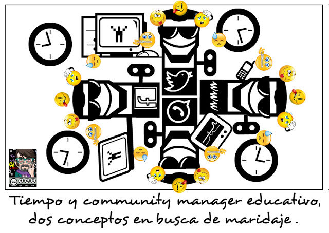

Community manager educativo
Necesitamos a alguien que se ocupe de esta compleja tarea ¿quién será? El concepto de community manager educativo (dinamizador de redes sociales educativas, por castellanizar la figura), cobra importancia a medida que los centros van teniendo presencia en la red social. Hay muchos modelos y todos pueden ser válidos en función del centro de que se trate. Del estudio de casos, propongo un perfil:
- Docente del centro (lo aclaro porque hay centros que confían la tarea a un padre o madre).
- Que no pertenezca al equipo directivo (porque ha de ser la voz del exterior en el centro y la voz del centro hacia el exterior y el equipo directivo representa a al centro y a la administración), pero sí (en el caso de centros de secundaria) al departamento de innovación y, desde luego, vinculado al equipo directivo y conocedor del propio centro.
- Vinculado con el COFOTAP (coordinador de formación para las tecnologías de los aprendizajes), pero no necesariamente el COFOTAP.
- Integrante de la CCP, porque tiene que estar al tanto de lo que sucede en el centro.
- Con capacidad para coordinar y dinamizar equipos.
- Y con la mayor cantidad posible de las cualidades que veremos a continuación.


Community Manager Educativo por Jose Ramón Olalla Celma bajo licencia Creative Commons Reconocimiento-NoComercial-CompartirIgual 4.0 Internacional License.